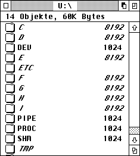
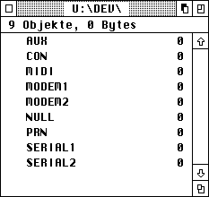
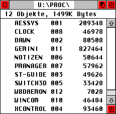

Under MagiC, a drive U: is created during the DOS initializtion. So that its existence is recognized by current programs, the relevant bit in _drvbits is set; however, no corresponding BIOS drive exists.

Within the pseudo-drive, there are some special directories, namely:
In contrast to MiNT, however, these are not special filesystems, but just subdirectories of the DFS for Drive U:. Depending on the particular subdirectory, the U-DFS creates various file-types and -drivers. As the directory control is encumbent on the DOS_XFS, write accesses to a workstation, for instance, are logged in the directory by the file date-stamp. This even goes so far that a write access to the root of drive A: alters the file date-stamp of U:\A automatically.
All directories are restricted to a maxium of 32 entries at present, and Dfree calls only return the value NULL. In the root directory one can create, besides existing files, only symbolic links (via Fsymlink).
Before every access to drive U:, newly added drives will be added via symbolic links, or no longer existing ones removed; this is recognized via _drvbits. A symbolic link for drive X: is registered as standard under the name U:\X, and points to the directory X:\. Symbolic links can be renamed or deleted (even a renamed link will be deleted if the relevant bit in the system variables _drvbits is cleared).
Warning: MiNT does not incorporate the drives as symbolic links, so one can set down the following command order:
| Dsetdrv | U: |
| Dsetpath | U:\A |
| Dgetpath | ==> U:\A |
| Dsetpath | .. |
| Dgetpath | ==> U:\ |
With a symbolic link, on the other hand, one really changes the path, i.e. in the third line A:\ appears as the current path. To overcome this problem, there is special treatment in the kernel which enable the above control order in MagiC as well. However there is a problem with this: The symbolic link may not be renamed, as otherwise the following happens:
| Frename | U:\A U:\FLOPPY |
| Dsetdrv | U: |
| Dsetpath | U:\FLOPPY |
| Dgetpath | ==> U:\A |
| Dsetpath | .. |
| Dgetpath | ==> U:\ |
Because all file functions on U: work in exactly the same way as on a floppy disk, it is possible to rename directories such as U:\DEV. Warning: This should be avoided if at all possible, since otherwise user programs will not be able to find their device drivers.
See also: About the BIOS About the GEMDOS MagiC's XFS-concept Test for pipes
In this directory the device drivers are entered. We are dealing here with pseudo-files, which are only known to DOS but not the BIOS.

The well-known device names too are found in this directory, as the following apply:
Because the devices installed here can be accessed with the normal GEMDOS file functions, it is possile to output a text document to a printer simply by saving with Fwrite, for instance. Filenames such as CON: are converted automatically by the kernel into the correct form (in this case: U:\DEV\CON).
Depending on the computer model, the following devices are available by default:
| Device | Description |
| AUX | BIOS device 2 |
| CON | Console |
| LAN | BIOS device 7, generally SCC, channel A |
| MIDI | BIOS device 3; with output status on the other hand the device with the index 4 |
| MODEM1 | BIOS device 6, generally the serial port realised with the ST-MFP, on the Falcon030 the SCC with channel B |
| MODEM2 | BIOS device 7, generally SCC, channel B |
| NULL | Empty pseudo-file, always returns during writing the status OK and during reading the value EOF (no character available) |
| PRN | BIOS device 0, during output it will abort at a timeout |
| SERIAL1 | BIOS device 8, generally the TT-MFP |
| SERIAL2 | BIOS device 9, generally SCC, channel A |
Apart from CON:, all devices operate in 'raw-mode', which means that control sequences such as [Control]-[C] are ignored.
Further devices can be created and entered at any time with Dcntl; due to the incompatible driver format, however, one must use the opcode DEV_M_INSTALL and not the otherwise usual DEV_INSTALL. The devices present can be renamed and deleted with the usual methods; in contrast to MiNT, the deletion of a device is performed via the device driver itself, which withdraws from the relevant system vectors and releases the occupied memory or can terminate itself. A further difference to MiNT is that MagiC makes the full functionality of the DOS filesystem available, i.e.:
Note: With Fcreate one can not create files here; however it is possible to create symbolic links with Fsymlink.
See also: About the BIOS About the GEMDOS MagiC's XFS-concept
In this directory pipes are stored; these are temporary files that are used particularly for data exchange between processes.
One differentiates between unidirectional and bidirectional pipes: the former allow data to flow only in one direction, the latter can transmit in both directions, though not simultaneously. Bidirectional pipes are used in the Drag&Drop protocol, for instance. Pipes return when reading via Fread basically EOF (End Of File) if they are empty or if no write process is present. Similarly, during writing with Fwrite the value EOF is returned if no read process is present.
The access for this is purely asynchronous, i.e. aplications wait for the read or write, and awake another application again if necessary. Pipes are deleted automatically when the last program using them has closed the file that represents them.
Note: MagiC supports a maximum of 32 pipes simultaneously. An Fseek on pipes leads basically to the return value of 0L, i.e. the file pointer cannot be influenced. In directories, pipes appear with a length of 2 or 4k and the date of their creation. If an ID > 31 is returned on opening of a pipe, the system function Fselect cannot be used.
In addition, as of MagiC 3 the following is to be heeded:
Pipes with mode 4 (pseudo-TTYs) are not supported. MagiC knows only uni- and bidirectional pipes and for mode 4 creates a bidirectional pipe. The main reason for pipes at present is the Drag&Drop protocol.
Pipes return for Finstat/Foutstat the number of bytes present or still free in the block
If a pipe is closed, then all waiting programs are awakened, to prevent any possible deadlocks
See also:
Fcreate Fread Fwrite Fclose Fpipe Test for pipes
This directory gives an oveview of the processes currently active in the system. Each entry consists of the following components:

In the above illustration, for instance, the process XCONTROL has the PID 4 and occupies 93460 bytes of memory at present.
Process IDs are allocated at program launch and released again on termination. The deletion of a file in this directory results in the corresponding process being destroyed (via the AES program manager).
Note: The MiNT-conform process attributes (special file attributes) are not supported by MagiC at present. The name of a process can be obtained also via the environmental variable _PNAM; the process ID is found also in the basepage.
See also: GEM Style guidelines Task-manager
This directory serves as 'storage' for shared memory; so here one can create files that represent blocks of memory which other processes may access.
By using shared memory it is very ease to realise inter-process communication (IPC).
See also: Fcntl SHMGETBLK SHMSETBLK